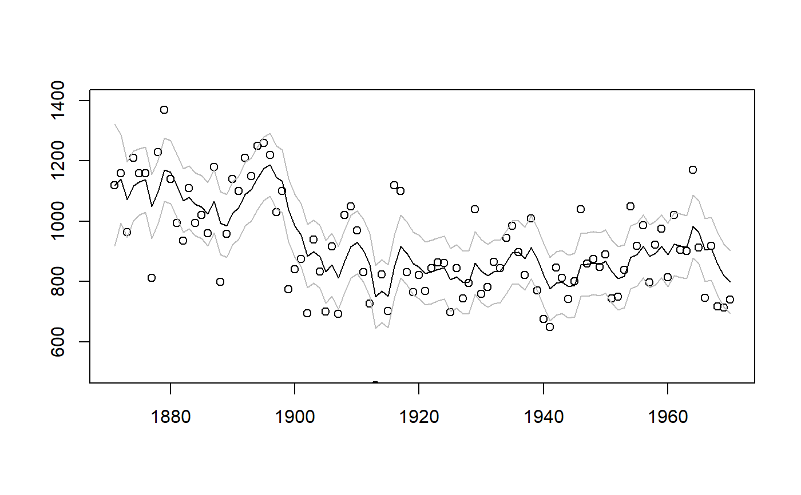

Fits a State Space model as specified by the user.
StateSpaceFit( y, H_format = NULL, local_level_ind = FALSE, slope_ind = FALSE, BSM_vec = NULL, cycle_ind = FALSE, addvar_list = NULL, level_addvar_list = NULL, arima_list = NULL, sarima_list = NULL, exclude_level = NULL, exclude_slope = NULL, exclude_BSM_list = lapply(BSM_vec, FUN = function(x) 0), exclude_cycle_list = list(0), exclude_arima_list = lapply(arima_list, FUN = function(x) 0), exclude_sarima_list = lapply(sarima_list, FUN = function(x) 0), damping_factor_ind = rep(TRUE, length(exclude_cycle_list)), format_level = NULL, format_slope = NULL, format_BSM_list = lapply(BSM_vec, FUN = function(x) NULL), format_cycle_list = lapply(exclude_cycle_list, FUN = function(x) NULL), format_addvar = NULL, format_level_addvar = NULL, method = "BFGS", initial = 0, control = list() )
| y | N x p matrix containing the N observations of the p dependent variables. |
|---|---|
| H_format | Format of the H system matrix, the variance - covariance matrix of the observation equation. |
| local_level_ind | Boolean indicating whether a local level should be added to the state space model. |
| slope_ind | Boolean indicating whether a local level + slope should be added to the state space model. |
| BSM_vec | Vector containing the BSM seasonalities that have to be added to the state space model. |
| cycle_ind | Boolean indicating whether a cycle has to be added to the state space model. |
| addvar_list | A list containing the explanatory variables for each of
the dependent variables. The list should contain p (number of dependent
variables) elements. Each element of the list should be a N x k_p matrix,
with k_p being the number of explanatory variables for the pth
dependent variable. If no explanatory variables should be added for one
of the dependent variables, then set the corresponding element to |
| level_addvar_list | A list containing the explanatory variables for
each of the dependent variables. The list should contain p (number of
dependent variables) elements. Each element of the list should be a
N x k_p matrix, with k_p being the number of explanatory variables
for the pth dependent variable. If no explanatory variables should be
added for one of the dependent variables, then set the corresponding
element to |
| arima_list | Specifications of the ARIMA components, should be a list containing vectors of length 3 with the following format: c(AR, I, MA). Should be a list to allow different ARIMA models for different sets of dependent variables. Note: The AR and MA coefficients are constrained such that the AR component is stationary, and the MA component is invertible. See Ansley and Kohn (1986) for details about the transformation used. |
| sarima_list | Specifications of the SARIMA components, should be a list containing lists that contain 4 named vectors. Vectors should be named: "s", "ar", "i", "ma". Should be a list of lists to allow different SARIMA models for different sets of dependent variables. Note: The AR and MA coefficients are constrained such that the AR components are stationary, and the MA components are invertible. See Ansley and Kohn (1986) for details about the transformation used. |
| exclude_level | Vector containing the dependent variables that should not get a local level. |
| exclude_slope | Vector containing the dependent variables that should not get a slope. |
| exclude_BSM_list | List of vectors, each vector containing the dependent variables that should not get the corresponding BSM component. |
| exclude_cycle_list | The dependent variables that should not get the corresponding cycle component. Should be a list of vectors to allow different dependent variables to be excluded for different cycles. |
| exclude_arima_list | The dependent variables that should not be involved in the corresponding ARIMA component. Should be a list of vectors to allow different dependent variables to be excluded for different ARIMA components. |
| exclude_sarima_list | The dependent variables that should not be involved in the corresponding SARIMA component. Should be a list of vectors to allow different dependent variables to be excluded for different SARIMA components. |
| damping_factor_ind | Boolean indicating whether a damping factor should be included. Must be a vector if multiple cycles are included, to indicate which cycles should include a damping factor. |
| format_level | Format of the Q_level system matrix the variance - covariance matrix of the level state equation. |
| format_slope | Format of the Q_slope system matrix, the variance - covariance matrix of the slope state equation. |
| format_BSM_list | Format of the Q_BSM system matrix, the variance - covariance matrix of the BSM state equation. Should be a list to allow different formats for different seasonality periods. |
| format_cycle_list | Format of the Q_cycle system matrix, the variance - covariance matrix of the cycle state equation. Should be a list to allow different formats for different cycles. |
| format_addvar | Format of the Q_addvar system matrix, the variance - covariance matrix of the explanatory variables state equation. |
| format_level_addvar | Format of the Q_level_addvar system matrix, the variance - covariance matrix of the explanatory variables of the level state equation. |
| method | Method that should be used by the |
| initial | Initial values for the parameter search, allowed to be a vector or just one number. |
| control | A list of control parameters for the
|
A list containing:
function_call: A list containing the input to the function.
system_matrices: A list containing the system matrices of the State Space model.
predicted: A list containing the predicted components of the State Space model.
filtered: A list containing the filtered components of the State Space model.
smoothed: A list containing the smoothed components of the State Space model.
diagnostics: A list containing items useful for diagnostical tests.
optim: A list containing the variables that are returned by the
optim or optimr function.
loglik_fun: Function that returns the loglikelihood of the specified State Space model, as a function of its parameters.
standard_errors: A list containing the standard errors of the parameters of the State Space model.
For extensive details about the object returned,
see vignette("dictionary", package = "statespacer").
To fit the specified State Space model, it might be beneficial to scale the dependent variables or pay careful attention to the initial values. If an error occurs, try to scale the dependents by a bigger number, or try different initial values. Initial values should not be too big, as some parameters use the transformation exp(2x) to ensure non-negative values, they should also not be too small as some variances might be relatively close to 0, relative to the magnitude of y. Note: after fitting the model, remember to scale the estimates back! Variances should be multiplied by the square of the scaling number!
Durbin J, Koopman SJ (2012). Time series analysis by state space methods. Oxford university press.
Ansley CF, Kohn R (1986). “A note on reparameterizing a vector autoregressive moving average model to enforce stationarity.” Journal of Statistical Computation and Simulation, 24(2), 99--106.
# Fits a local level model for the Nile data library(datasets) y <- matrix(Nile) fit <- StateSpaceFit(initial = 1, y = y / 100, local_level_ind = TRUE)#> Warning: Number of initial parameters is less than the required amount of parameters (2), recycling the initial parameters the required amount of times.#>#> Parameter scaling:[1] 1 1 #> initial value 2.443183 #> iter 10 value 1.775548 #> final value 1.775527 #> converged#>#># Plots the filtered estimates plot(1871:1970, 100 * fit$function_call$y, type = 'p', ylim = c(500, 1400), xlab = NA, ylab = NA)lines(1871:1970, 100 * fit$filtered$level + 1.644854 * 100 * sqrt(fit$filtered$P[1,1,]), type = 'l', col = 'gray')lines(1871:1970, 100 * fit$filtered$level - 1.644854 * 100 * sqrt(fit$filtered$P[1,1,]), type = 'l', col = 'gray')# Plots the smoothed estimates plot(1871:1970, 100 * fit$function_call$y, type = 'p', ylim = c(500, 1400), xlab = NA, ylab = NA)lines(1871:1970, 100 * fit$smoothed$level + 1.644854 * 100 * sqrt(fit$smoothed$V[1,1,]), type = 'l', col = 'gray')lines(1871:1970, 100 * fit$smoothed$level - 1.644854 * 100 * sqrt(fit$smoothed$V[1,1,]), type = 'l', col = 'gray')